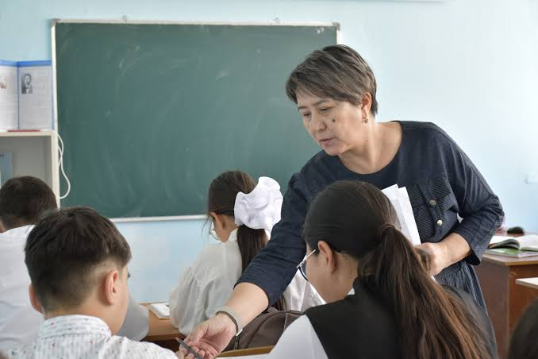

Institutional inequality
How geography shapes the resources and opportunities available to schools.
A teacher’s potential shouldn’t depend on a school’s postcode. Can AI help close the distance between a common curriculum and equal opportunity?
How geography shapes the resources and opportunities available to schools.
How expertise, mentoring and professional development shape teaching.
Whether AI can expand access to professional support.
What society might gain, lose and risk through technological intervention.
Behind every student stands a teacher. Behind every teacher stands an institution — with unequal resources, networks and opportunities.
Unequal access to specialist expertise, instructional resources and professional development can restrict teachers’ ability to exercise their capabilities.
In Kazakhstan, geographical location continues to shape the institutional resources, professional opportunities, and learning environments available to schools. According to the Government of Kazakhstan (2024), 67% of the country's schools are located in rural areas, serving approximately 40% of school-age children. However, despite ongoing educational reforms, significant differences persist between rural and urban schools. According to PISA 2022 data, students in rural Kazakhstan scored 18 points lower in mathematics, 26 points lower in science, and 24 points lower in reading compared to their urban peers (OECD, 2023, as cited in Sarmurzin et al., 2026, p. 3). Together, these figures demonstrate both the national significance of rural education and the persistence of geographical inequalities.
Since 2022, the Government of Kazakhstan has implemented initiatives to strengthen rural schools through modernization and institutional capacity building. Although the rural–urban achievement gap narrowed between 2018 and 2022 by four points in mathematics and five points in science, educational disparities remain (Government of Kazakhstan, 2024). The persistence of these disparities raises questions about whether existing interventions sufficiently address the institutional needs of rural teachers.
In December 2024, the Government of Kazakhstan reported that 76% of schools classified as being in emergency condition were located in rural areas. Sarmurzin et al. (2026) highlight three structural challenges affecting rural education: the unequal distribution of teaching personnel, inadequate material resources, and insufficient access to professional development. These structural challenges demonstrate that a common national curriculum does not necessarily guarantee equal institutional capacity to deliver it. Tajik et al. (2022) identify limited professional-development opportunities, inadequate instructional resources, and difficulties retaining qualified specialists among the challenges experienced by rural schools. Some teachers even reported spending part of their monthly salaries on instructional materials. Furthermore, Kiynova et al. (2025) found that only 16.3% of novice rural teachers participating in their study in the Almaty region expressed willingness to seek advice from mentors, while 32.7% preferred independent learning. The problem, therefore, is not necessarily a lack of capable teachers, but unequal institutional opportunities for teachers to strengthen and exercise their professional capabilities.
Beyond educational performance, geographical inequalities in schooling can reinforce broader socioeconomic disparities, restrict opportunities for social mobility, and contribute to uneven regional development. Addressing unequal institutional support for teachers is therefore not only an educational priority but also a question of social equity and public policy.
Rural scores below urban peers. OECD (2023), cited in Sarmurzin et al. (2026), p. 3 ↗
Student achievement is the observable outcome. Unequal institutional support for teachers is the mechanism we investigate.
How equally are expertise, professional opportunities and technological resources distributed across Kazakhstan’s education system?
National averages may conceal substantial geographical disparities. These data establish a rationale for investigating equitable support; they do not demonstrate that AI will resolve institutional inequality.
Resources, support and governance shape professional opportunities.
Tajik · Kiynova · Sarmurzin02 →Relevance, practical learning and implementation quality matter.
Kraft · Popova · Fischer03 →Better task performance may not translate into professional growth.
Abukhanova · Kinder · Ding · Zhang04 ↗Can individual assistance become institutional equity?
Our proposal begins hereEducational inequality cannot be adequately explained through differences in individual teacher competence. A broader institutional approach considers how the distribution of resources, professional opportunities, working conditions, and governance structures shapes teachers' ability to deliver quality education.
Research by Tajik et al. (2022), involving stakeholders from 18 rural schools across Kazakhstan, identifies limited professional-development opportunities, inadequate instructional resources, and difficulties attracting and retaining qualified specialists. These findings suggest that geographical disadvantage is reproduced partly through institutional conditions that restrict teachers' professional opportunities. However, resource availability represents only one dimension of institutional inequality. Kiynova et al. (2025) extend this discussion by examining the organization of professional mentoring among rural teachers. Their findings indicate that young teachers frequently prefer independent learning over consultations with experienced colleagues, raising questions about how existing mentoring arrangements respond to teachers' professional needs. Sarmurzin et al. (2026) introduce a further institutional dimension: educational governance. Through interviews with 32 teachers participating in Kazakhstan's Targeted Schools programme, they demonstrate how top-down reforms, poorly aligned professional development, and externally imposed accountability requirements can undermine professional trust and generate defensive collective behavior, conceptualized as forced solidarity.
Together, these studies identify three interconnected dimensions of institutional inequality: unequal resource distribution, weaknesses in professional-support mechanisms, and governance arrangements that may insufficiently accommodate teachers' needs. Although their predominantly qualitative and geographically bounded evidence cannot establish the relative causal importance of these factors, the studies challenge approaches that place responsibility for educational improvement primarily on individual teachers.
For our research, this suggests that strengthening teacher capacity requires not simply improving individual qualifications, but transforming the institutional opportunities through which professional competence develops.
↑ Back to Research OverviewThe international literature presents both encouraging and contradictory findings. Kraft et al. (2018), through a meta-analysis of 60 studies employing causal research designs, identify positive average effects of teacher coaching on instructional practice (0.49 standard deviations) and student achievement (0.18 standard deviations). However, they also find substantially weaker effects when coaching programmes are implemented at larger scales. In contrast, Fischer et al. (2020), drawing on data from 113,603 students and 6,046 teachers in American Advanced Placement science courses, identify relatively small and mixed associations between professional-development participation and student achievement. Administrative support, teacher self-efficacy, experience, and instructional practices also emerge as relevant factors.
These findings do not necessarily contradict one another. While Kraft et al. evaluate the causal effectiveness of coaching interventions, Fischer et al. examine statistical associations across broader forms of professional development. The distinction suggests that different support mechanisms should not be treated as equally effective. Popova et al. (2022) provide a potential explanation for this variation. Comparing 33 rigorously evaluated professional-development programmes with 139 government-funded programmes across 14 countries, they identify a gap between characteristics associated with effective training and those commonly implemented at scale. Opportunities to practise instructional techniques, subject-specific content, career-related incentives, and initial face-to-face instruction are associated with stronger learning outcomes.
This international evidence also helps contextualize the concerns raised by Sarmurzin et al. (2026) regarding professional development in Kazakhstan. Expanding training provision without ensuring its relevance to teachers' needs may produce administrative participation rather than meaningful professional improvement. Consequently, the challenge is not simply to make professional development more widely available, but to ensure that it is context-sensitive, practical, and sustainable. AI intervention that merely expands access to educational materials without contributing to comprehensive professional training risks reproducing the shortcomings of traditional professional development programs.
↑ Back to Research OverviewEmerging research on artificial intelligence introduces a distinction between improving the performance of particular professional tasks and developing sustainable professional competence. Abukhanova et al. (2026) examine AI-supported classroom simulations involving 91 preservice primary teachers. Their findings indicate improvements in lesson planning, pedagogical knowledge, and teaching self-efficacy. However, the intervention does not produce a significant advantage in subject-content knowledge.
Similar distinctions emerge in international research. Kinder et al. (2025), through a randomized controlled trial involving 269 German preservice teachers, find that personalized AI-generated feedback improves the quality of written diagnostic reasoning justifications compared with static expert feedback, but does not significantly improve diagnostic decision accuracy. Ding et al. (2026) reinforce this distinction by comparing AI-generated and teacher-generated feedback among 42 preservice teachers. Although both approaches improve instructional-design scores, neither produces significant improvements in broader instructional-design competencies.
Taken together, these studies suggest that AI can support particular aspects of professional performance without necessarily producing equivalent improvements in independent judgment, subject expertise, or transferable competencies.
More critical evidence comes from Zhang et al. (2026). Their quasi-experimental study involving 52 preservice chemistry teachers finds that generative AI access without structured guidance does not produce significant advantages in critical thinking, self-regulated learning, or AI readiness. Moreover, the comparison group demonstrates stronger instructional-design performance.
The differences between these findings suggest that the educational value of AI may depend on the conditions under which it is integrated into professional learning. Structured simulations and targeted feedback appear promising, whereas unrestricted access does not necessarily facilitate professional growth. Nevertheless, differences in study populations, interventions, and outcome measures prevent a definitive causal comparison across these studies.This interpretation is consistent with the broader professional-development literature: providing a resource is not equivalent to developing expertise.
For our project, AI should therefore function as a supplementary mechanism for active professional learning rather than simply generate instructional materials or substitute for human expertise.
↑ Back to Research OverviewKazakhstan-specific research identifies structural barriers that restrict rural teachers' professional opportunities. International research demonstrates that well-designed professional support can improve teaching, while emerging AI studies establish potential benefits for selected pedagogical tasks.
However, these findings do not establish that AI-assisted professional development can reduce geographical inequalities. Most of the reviewed AI studies examine preservice teachers in university environments rather than practicing educators in rural schools. Furthermore, improvements in individual task performance do not necessarily translate into institutional improvements or a more equitable distribution of professional opportunities.
This creates the central research gap of whether AI-assisted professional support can strengthen teacher capacity in ways that reduce institutional disparities between rural and urban schools in Kazakhstan.
Addressing this gap requires evaluating not only AI's effectiveness as a professional-learning resource, but also its accessibility, institutional integration, and distribution of benefits across differently resourced schools. Our project therefore proposes an approach in which AI complements human mentoring and professional expertise, while recognizing that technological intervention alone cannot eliminate structural educational inequality.
The question is not simply whether AI can help teachers, but whether it can make effective professional support more equally accessible.
↑ Back to Research OverviewAI-assisted support, curriculum-aligned resources and human mentoring — designed around rural teachers in Kazakhstan.
Pilot launched.
Planned expansion.
Planned expansion.
Planned coverage.
Source: Government of Kazakhstan (2026) ↗
Qadam Teacher is not intended to replace Kazakhstan’s existing educational digitalization initiatives. Instead, it proposes a complementary intervention that strengthens the professional capacity of teachers responsible for implementing these reforms.
Verified materials aligned with Kazakhstan’s national curriculum.
Feedback on strategies, lesson plans and professional questions.
Classroom simulations, reflection and subject-specific practice.
Experienced educators for complex questions and guidance.
I need to teach photosynthesis to Grade 7 students, but our school does not have laboratory equipment. How can I make the lesson interactive?
We can adapt your lesson to the resources available in your school.
How would you adapt this for different levels of understanding?
464 teachers at randomization, 108 primary schools, ten weeks. No evidence of reduced resource quality.
EEF & NFER (2026) ↗Estimated improvement among instructors induced to check feedback; 1,136 instructors in a randomized online computer-science trial.
Demszky et al. (2024) ↗+9 pp for students of lower-rated tutors. A randomized tutoring trial, rather than evidence of teachers’ long-term professional growth.
Wang et al. (2026) ↗
Recruit schools, develop bilingual resources, test reliability and infrastructure.
Prepare teachers and mentors; measure baseline competencies.
Provide ongoing support and collect evaluation data.
Independently assess access, effectiveness, costs and unintended consequences.
Standard professional development.
Additional mentoring and verified resources.
Group B’s support, supplemented by Qadam Teacher.
What does educational equity actually cost? Behind every AI interaction lies physical infrastructure, human labor and political decisions.
Total project duration stays at 12 months. Active months refer to intervention use. Full AI access is a conservative ceiling; the three-group evaluation initially assigns AI to approximately one-third of teachers.
Fixed core personnel: ₸23,550,000. Mentors: ceil(teachers / 20) × active months × ₸120,000. Employer allowance: 20% of core personnel and mentoring. Equipment: (participating schools × ₸200,000) + (schools requiring upgrades × ₸1,100,000). Annual connectivity: (schools not requiring upgrades × ₸10,000 × 12) + (schools requiring upgrades × ₸140,000 × 12). Training: ₸10,000 per teacher. Evaluation: ₸3m. Hosting: ₸1.2m. Compliance: ₸2m. AI: requests × ₸3.1108 × multiplier. Contingency: 15% of subtotal. All staffing, infrastructure and procurement costs are authors’ planning assumptions.
Monetary line items are displayed to the nearest tenge; totals and percentages are calculated from unrounded values. Displayed rounded line items may therefore differ slightly from their displayed total. Electricity, water and recovered time retain up to four decimal places; very small budget shares retain additional decimal places.
The baseline budget assumes that participating schools already have adequate internet infrastructure. Satellite connectivity estimates are based on historical prices reported in 2024, rather than current procurement quotations. The environmental footprint of additional satellite equipment is not included.
Historical satellite equipment and subscription benchmarks: Уммат (2024) ↗
Planning references: Salary benchmarks ↗ · API pricing reference ↗ · Exchange rates ↗. The fixed processing rate is the document’s planning assumption, not a live price quotation.
Current assumptions at 5-school increments. The selected proportion of schools requiring upgrades is held constant; proportional costs may represent fractional school equivalents. This model does not capture every additional infrastructure or staffing requirement of expansion; it is not a definitive national budget.
of the proposed budget goes directly to AI processing.
The larger investment is in people and institutional capacity.
Low-carbon generation share · 2025
~62% of Kazakhstan’s electricity comes from coal.
Domestic hosting may support data protection and sovereignty, while the electricity mix creates environmental trade-offs.
AI inference: requests × Wh / 1,000. Server: 100 W × 8,760 h / 1,000 = 876 kWh/year. Devices: AI users × active working days × 0.05 kWh, assuming one hour at 50 W daily. Water: requests × Wh × (0.26 / 0.24) / 1,000 liters. This extrapolates a Google benchmark; actual cooling demand varies by infrastructure, location and technology.
Domestic-grid scenario: all operational electricity × 0.813 kg CO₂e/kWh, converted to tonnes. This is a hypothetical scenario. Excludes model training, hardware production, e-waste, network infrastructure, indirect water and wider supply chains. Device and server use may not be additional to existing educational activity.
Google inference benchmark (2025) ↗ · Grid-intensity reference supplied in the document ↗
of the modeled budget supports personnel and employer costs. Additional labor is embedded in evaluation and compliance.
Hypothetical scenario, not a demonstrated outcome. AI users × weekly minutes / 60 × active months × 4; working days = hours / 8.
Reduced preparation time
Accessible guidance
More time with students
Flexible professional learning
Verification of AI materials
Additional monitoring
Technological dependence
Moderation and maintenance
AI does not eliminate human labor.
It redistributes it.
Ministry of Education · public funding · potential grants
Publicly governed, free for participating teachers
API & hosting revenue
Salaries & compensation
Professional support
Research & oversight
Public investment in privately controlled AI infrastructure raises questions about technological dependence and institutional sovereignty.
No. 230-VIII · adopted November 17, 2025
LEGAL REFERENCE ↗Republic of Kazakhstan
Design requirements, not confirmation of legal compliance. The proposed system must follow applicable AI and personal-data rules; cross-border processing requires prior legal assessment.
The most significant cost is the expertise, infrastructure, resources and governance needed to make AI work responsibly. Would this support generate greater educational benefits than alternative uses of the same public resources?
We support a conditional pilot of Qadam Teacher, with investment in human expertise and institutional capacity at its center.
Artificial intelligence is not a universal solution to educational inequality. The estimated financial and environmental costs appear proportionate at pilot scale, but benefits remain to be demonstrated. AI should strengthen the institutions responsible for equality.
What AI contributed: ChatGPT (OpenAI) assisted with identifying academic literature, organizing research findings, developing analytical arguments, and drafting website content. It also supported the preparation of statistical visualizations, the conceptual development of Qadam Teacher, and the estimation of its financial and environmental costs. Codex (OpenAI) was used to generate and refine the website’s code, layout, visual design, interactive charts, and cost calculators.
What I verified: I reviewed the relevance of academic literature, examined research methodologies and findings, and questioned the accuracy of numerical and qualitative claims. I requested verification against original sources, assessed the relevance of real-world AI implementation cases, and reviewed the assumptions underlying the financial and environmental estimates. I also identified additional sources concerning Kazakhstan’s ongoing AI integration into rural education and incorporated them into the research.
What I accepted: I adopted the thematic organization of the literature review, selected statistical visualizations, and the proposed Qadam Teacher platform as a complementary intervention to Kazakhstan’s existing educational initiatives. I incorporated interactive calculators to demonstrate how implementation costs change depending on project scale, AI usage, and infrastructure readiness.
What I rejected and why: I rejected a descriptive, article-by-article literature review in favor of critical analytical synthesis. I removed redundant visualizations, challenged inconsistencies in statistical evidence, and avoided generalizations unsupported by the available research. I also questioned initial infrastructure cost assumptions and revised the financial model to account for schools requiring additional internet connectivity. Throughout the project, I rejected the assumption that AI alone could eliminate institutional educational inequality.
Important clarification: Qadam Teacher is a conceptual proposal, not an operational AI platform. The chat demonstration is a scripted mock-up intended to illustrate its proposed functionality. The financial and environmental calculators present hypothetical estimates based on published benchmarks and planning assumptions, rather than actual expenditure or measured resource consumption.
Final position: The decision to endorse the conditional implementation of Qadam Teacher reflects my own assessment of the academic evidence, potential social benefits, estimated costs, and governance risks. AI supported the research and development process, but the final analytical judgments and policy recommendations remain my responsibility.